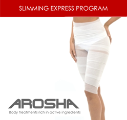

Каждая из нас желает как можно дольше сохранять красоту и молодость.
Не секрет, что приобрести красивую форму тела, превратить его в предмет гордости возможно только с помощью неимоверных усилий.
В нашей студии Вы найдете целый комплекс услуг по коррекции фигуры, который поможет Вам поддержать красоту и здоровье без особых усилий.
Приходите к нам отдыхать!
Правила посещения
Дорогие и любимые наши Посетительницы!
Для Вашего комфортного пребывания у нас в гостях просьба учитывать и соблюдать следующие правила нашего салона:
- Запись ведется только на один сеанс процедур.
- При опоздании клиента более, чем на 10 минут, время процедуры сокращается; при опоздании более, чем на 15 минут, студия оставляет за собой право отдать время процедуры другому посетителю.
- Очень важно! Если Вы пропускаете процедуру, не предупредив об отмене, процедура считается использованной.
- В случае возникновения технических неполадок и других непредвиденных ситуаций администрация оставляет за собой право перенести процедуру на другое, удобное для Вас, время.
- Абонементы обмену и возврату не подлежат. Возможен обмен процедур.
- Срок действия абонемента, приобретенного по прайсу, — 6 месяцев.
- Для сеансов прессотерапии необходимо приобрести индивидуальный комбинезон или принести с собой домашнюю одежду (желательно хлопчатобумажную или трикотажную).
- При себе иметь полотенце.
Уважаемые девушки, правила нужны не для того чтобы ущемить Ваши права! Мы хотим, чтобы Вам было приятно у нас находиться!
Новости
Бодифлекс — великолепная фигура без лишних хлопот!
Считается, что наилучшего результата в достижении идеальной фигуры можно добиться, если сидеть на изнурительной диете, проводить часы в спортивном зале и тратить уйму денег на косметические процедуры. Мы разрушаем этот миф. Совершенствование своего тела может быть приятным и не обременительным. Мы рады пригласить вас на занятия бодифлексом.
Бодифлекс — это уникальная методика, поддерживающая красоту и здоровье. Отличительной чертой этого метода является сочетание изотонических и растягивающих упражнений со специальным дыханием. За счет особой методики дыхания кислород сжигает жир именно в тех зонах, на которые направлены упражнения. Этого трудно достичь обычной гимнастикой. Механизм жиросжигания запускается во время тренировки и продолжается ещё несколько часов после нее. Вы уже отдыхаете, а бодифлекс продолжает работать над вашей фигурой! Занимаясь бодифлексом ежедневно, можно уже за три месяца достичь заметных изменений своей фигуры к лучшему. Уже в первую неделю правильных занятий возникает видимый результат от тренировок и улучшается общее состояние организма. Главный принцип бодифлекса — регулярность. Систематические занятия бодифлексом помогут вам сохранить отличную фигуру на долгие годы.
Занятия проводятся по субботам и воскресеньям с 16:00 до 17:00 по адресу: ул. Ватутина 20/1, школа танцев «Дека дэнс».
Стоимость одного занятия — 300 р.
Абонемент на 8 занятий — 2000 р.
Антицеллюлиный массаж
Предлагаем вам попробовать новую услугу — ручной баночный массаж.
Он может отлично сочетаться как с аппаратной косметологией, так и с обертыванием для достижения наилучшего эффекта.
До 1 ноября стоимость 1 сеанса — 350 р.
Курс из 10 сеансов Вы можете приобрести за 3000 р.
Ламинирование ресниц
Представляем новую услугу — кератиновое ламинирование ресниц.
В результате этой процедуры реснички становятся темными, приподнятыми, взгляд открытым. За счёт кератина реснички восстанавливаются, становятся более упругими. Эффект держится 1—2 месяца.
Вам подарок!
До конца этого года мы дарим Вам сертификат на 500 рублей для приобретения абонемента или программы по коррекции фигуры.
Вам нужно его просто распечатать и, предварительно записавшись, прийти к нам. Мы поможем подобрать наиболее эффективные для Вас процедуры. Также этот сертификат можно подарить.
В новый сезон с новыми ощущениями
С сентября 2014 года у Вас есть возможность попробовать новую услугу в нашей студии.
Это новые и эффективные процедуры по коррекции фигуры с использованием профессиональной итальянской косметики Arosha.
Позвольте рассказать, что это такое…
Arosha — это бандажное обертывание, которое дает возможность делать аппаратную косметологию еще более эффективной. Arosha — это косметическая линия, богатая активными компонентами, которые позволяют работать с разными проблемами тела с наибольшим успехом.
Процедуры дают видимые результаты после первого же сеанса.
Как она работает?
Кожа постепенно впитывает активные компоненты, которыми пропитана ткань бинта, непосредственно наложенного на тело.
Над какими проблемами будем работать?
Arosha предлагает увлажняющие, тонизирующие, с эффектом упругости, дренажа и антицеллюлитные процедуры.
Когда мы используем процедуры Arosha?
Благодаря восьми разным программам Arosha работает над различными специфическими кожными проблемами:
- ожирение
- дряблость тканей
- целлюлит
- апельсиновая корка
- сухая кожа
- застой жидкостей
На каких участках тела можно использовать Arosha?
Грудь, ноги, живот, ягодицы, руки, шея и область декольте.
Сочетание с аппаратными меодиками
Благодаря тому, что линейка Arosha имеет широкий спектр воздействия на нежелательные явления на теле, ее инновационные разработки позволяют сочетать бандажи с аппаратными технологиями для достижения большего эффекта от процедуры.
Здесь перечислен ряд аппаратных методик, которые отлично сочетаются с косметикой Arosha и дают максимальный эффект при взаимодействии с ней:
- Электромиостимуляция — используется для приведения в тонус мышц. Косметика Arosha работает на уровне кожи и подкожно-жировой клетчатки, а миостимуляция вызывает сокращения мышц посредством электрических импульсов, что приводит к их тренировке — так называемый «фитнес для ленивых».
- Ультразвук низкой частоты — воздействует на жировую ткань и фиброзные образования, разбивает их, а продукты распада выводятся с помощью выделительной системы и дренажа. В сочетании с косметикой можно добиться максимального эффекта — усилить расщепление жировой ткани и ускорить дренаж.
- Инфракрасное излучение — прогревает ткань на глубину до 5 см. Способствует ускорению клеточного обмена.
- Прессотерапия (механический жесткий массаж) — способствует улучшению венозного кровообращения и лимфодренажа. Особенно важен этот массаж для области живота, бедер и ног. Предотвращает варикоз, способствует выводу токсинов.